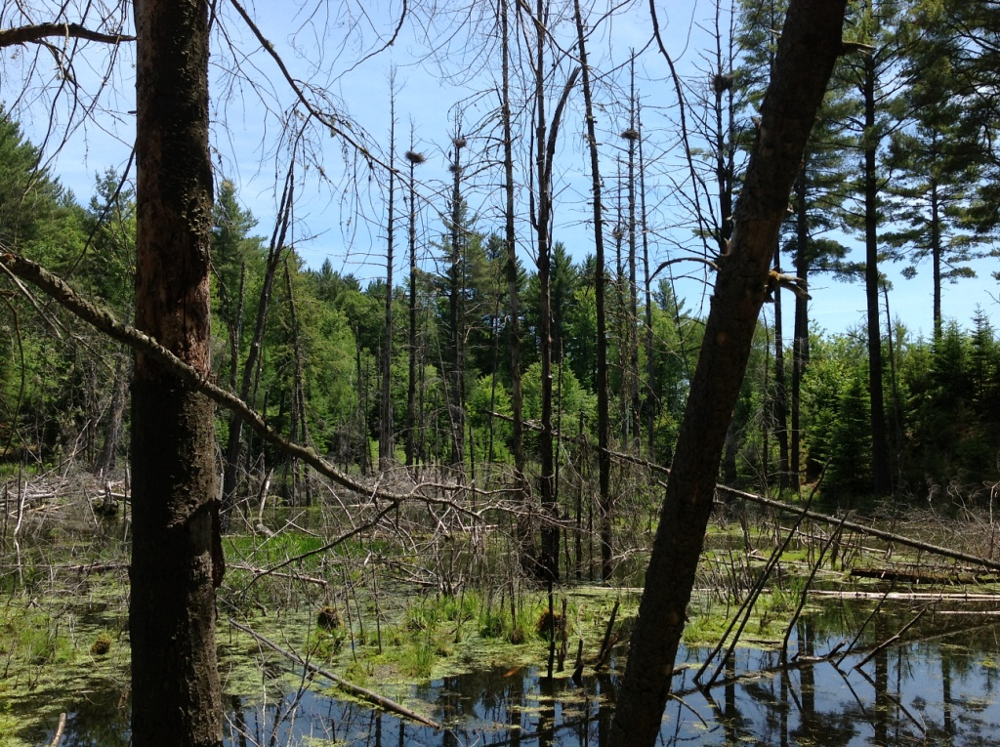

Contents:
Overview
Plants
Mammals
Birds
Reptiles & Amphibians
Human ActivityBirds in the Wetlands
These wetlands are magnets for a wide variety of birds. The old snags in one pond contain nearly a dozen blue heron nests, many of them active during the breeding season (March to August). One can often find nearby ravens, eagles, and hawks waiting to grab an unattended chick or, if they arrive early enough in the spring, to appropriate one of the big nests for themselves.
Note: From the time chicks have hatched in April until they fledge in late July, the herons are particularly vulnerable to disturbances such as human and canine visitors. A nervous parent can inadvertently knock a chick out of the nest, or an alarmed chick can fall out, in either case landing in the water, where it is doomed. It is best to avoid the rookery during this period. Wood ducks and mergansers nest in hollow trees near or over water. Undoubtedly many migrating waterfowl stop in Fairlee Wetland as well. Some, like the shy pie-billed grebe, may even nest there if they can find a water-bound hummock or floating mat away from the coyotes, foxes, fishers, bobcats, and other small predators that patrol the shores.
Not surprisingly, given the seclusion and prevalence of insects in the Wetlands, songbirds, too, flourish in this pristine environment, and birders can see or hear species that won’t appear in our yards and at our feeders — shy woodland birds like the hermit thrush, and those that prefer a wet environment like the elusive rusty blackbird, the bittern, and the alder flycatcher. In his survey of the wetland, Steve Hagenbuch found three “responsibility” songbird species (meaning they are on a watch list) including the Canada warbler, veery, and olive-sided flycatcher, as well as the more common red-winged blackbird, barn swallow, common grackle, tree swallow, and great-crested flycatcher.